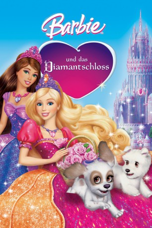

#665 Barbie 13 und das Diamantschloss
Alternativ: Barbie and the Diamond Castle
 
 IMDB-Wertung: 6.3 / 10
IMDB-Wertung: 6.3 / 10  Metascore: 0
Metascore: 0 
Barbie und ihre Freundin Teresa sind die besten Freundinnen, die alles miteinander teilen, auch ihre Liebe zur Musik. Sie erzählen einem jungen Mädchen von den zwei Freundinnen Delia und Alexa im Märchenland. Die beiden bekommen einen Zauberspiegel in die Hände, in dem eine Prinzessin gefangen ist und die ihnen vom furchtbaren Schicksal ihrer Familie erzählt.
Jahr: 2008
Dauer: 79 Minuten
FSK:
Land: USA Studio: Universal Studios Home EntertainmentTonspuren:
Untertitel:
Auflösung: SD (640x352) Größe: 699 MB
Genre: Animation/Trick, Familie, Musical
Regisseur: Gino Nichele
Drehbuch: Elana Lesser, Cliff Ruby
Soundtrack: Arnie Roth
Darsteller:
Datei: X:\Kinder Collections\Barbie\Barbie 13 und das Diamantschloss (2008, FSK, 640x352).avi seit 12.03.2015
Festplatte: Kinder-Filme+Trick
 Es gibt insgesamt 40 Filme in der Gruppe 'Kinder Collections\Barbie'
Es gibt insgesamt 40 Filme in der Gruppe 'Kinder Collections\Barbie'